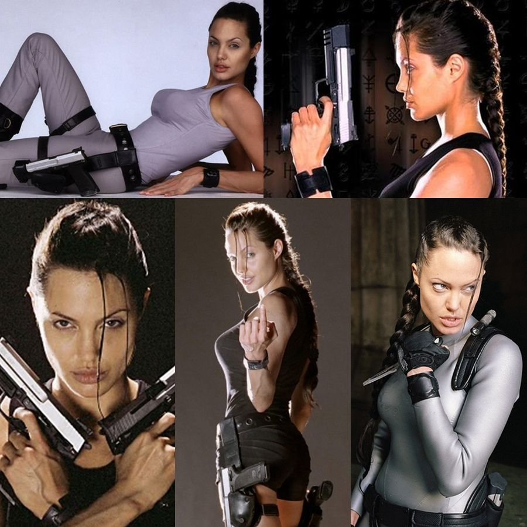
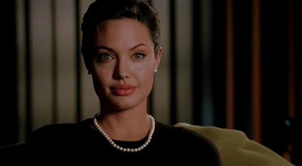

Angelina Jolie
Angelina Jolie Voight
Nacimiento: 4 de junio de 1975 (47 años)
Biografia
Actriz, directora, productora, empresaria y filántropa estadounidense. A lo largo de su carrera, Jolie ha recibido varios reconocimientos por sus logros cinematográficos. En 2016 la London School of Economics anunció que Jolie sería profesora de un nuevo tipo de máster sobre «Las mujeres, la paz y la seguridad» con el objetivo de promover la igualdad de género y ayudar a las mujeres afectadas por los conflictos de todo el mundo.
Filmografia


Familia

Cónyuges:
- Jonny Lee Miller (matr. 1996; div. 1999)
- Billy Bob Thornton (matr. 2000; div. 2003)
- Brad Pitt (matr. 2014; div. 2016)
- Mejor Actriz de Reparto 1999 Girl, Interrupted
- Premio Humanitario Jean Hersholt 2013 A sus Causas Humanitarias
- Mejor actriz de reparto en una serie, miniserie o telefilme 1997 George Wallace
- Mejor actriz en una miniserie o telefilme 1998 GIA
- Mejor actriz de reparto 2000 Girl, Interrupted